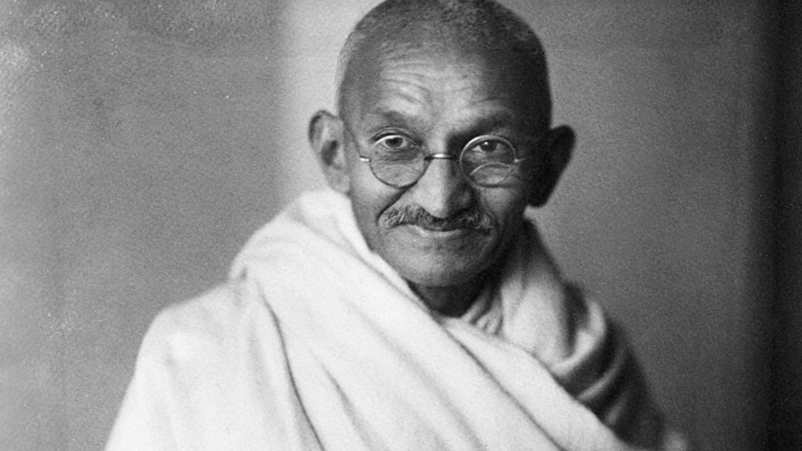
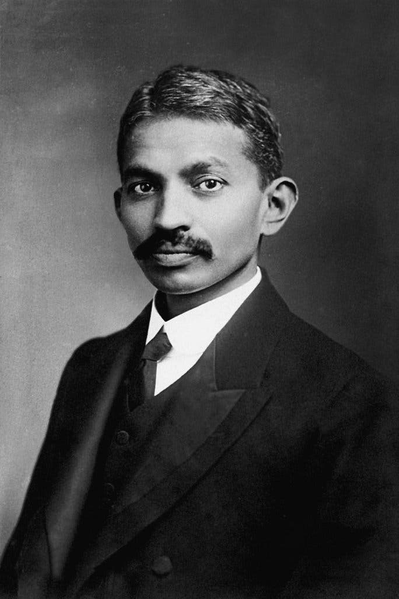
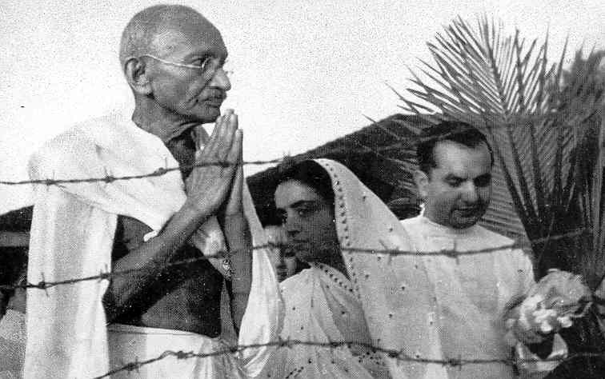
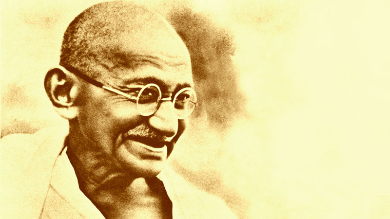
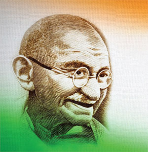
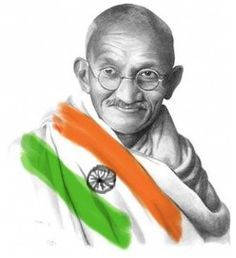
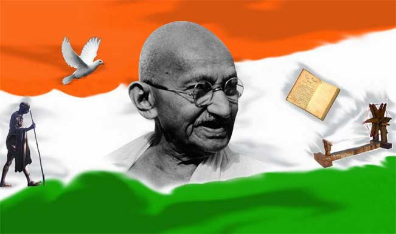

Mahatma Gandhi
The Great Leader

The Greatest Leader of All Time
About Bapu Life:
- Born:Mohandas Karamchand Gandhi 2 October 1869 Porbandar, Porbandar State, Kathiawar Agency, British Raj (present-day Gujarat, India)
- Died: 30 January 1948 (aged 78) New Delhi, East Punjab, Dominion of India
- Cause of death:Assassination (gunshot wounds)
- Monuments:Raj Ghat
Gandhi Smriti - Citizenship:Brithih Raj(1869-1947)
Dominion of India(1974-1948) - Alma Mater: Alfred High School, Rajkot (1880 – November 1887) Samaldas Arts College, Bhavnagar (January 1888 – July 1888) Inner Temple, London (September 1888 – 1891) (Informal auditing student at University College London between 1888 and 1891)
- Occupation:Lawyer
- Years Active:1893-1948
- Era:British Raj
- known For:Leadership of the Campaign for India's independence from British Rule Nonviolent resistance
- Notable Work:The Story of My Experiments with Truth
- Office:43rd President of the Indian National Congress
- Term:1924
- Predecessor:Abdul Kalam Aad
- Successor:Sarojini Naidu
- Political Party:Indian National Congress(1920-1934)
- Movement:Indian Independence Movement
- Spouse(s):Kasturba Gandhi(m. 1883; died 1944)
- Children:Harilal , Manilal , Ramdas , Devdas
- Parents:Karamchand Ghandi(Father)
Putibai Ghandhi(Mother) - Awards:Time Person of The Year 1930





